정보통신기사(구) (2002-03-10 기출문제)
1과목: 디지털 전자회로
1. 그림은 무슨 flip-flop회로인가?
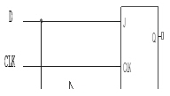
- M-S FF
- S-R FF
- CLK FF
- D FF
(정답률: 알수없음)

2. 그림(a)회로에 그림(b)와 같은 전압을 입력측에 인가할 때 정상상태에서의 출력전압 Vo는?
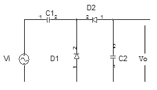
- 3(V)의 진폭을 갖는 부의 펄스
- 3(V)의 진폭을 갖는 정의 펄스
- -6(V)의 직류전압
- +3(V)의 직류전압
(정답률: 알수없음)
3. 다음 회로에 대한 설명중 옳은 것은?(문제 복원 오류로 정답은 1번입니다. 추후 그림파일은 복원하여 두겠습니다.)
- 출력 신호의 상단 레벨을 일정하게 유지한다.
- 출력 신호의 하단 레벨을 일정하게 유지한다.
- 반파 정류회로이다.
- 클리퍼이며 일정값 이하로 출력신호의 크기를 제한한다.
(정답률: 알수없음)
4. 다음과 같은 회로의 출력은?
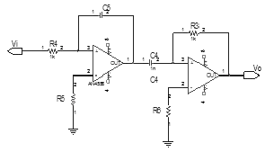
- 0
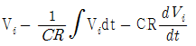
- Vi
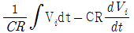
(정답률: 알수없음)
5. 위상변조의 설명으로 틀린 것은?
- 반송파의 위상을 신호파의 진폭에 따라 변화시키는 변조방식이다.
- 신호파는 Vs=Vs cos wst이다.
- 반송파는 Vc=Vc sin (wct+θ)이다.
- 피변조파는 V(t)=Vc sin (wct+m sin wst)이다.
(정답률: 알수없음)
6. 다음 중 멀티바이브레이터를 구성할 때 필요한 요소가 아닌 것은?
- 트랜지스터
- 콘덴서
- 저항
- 코일
(정답률: 알수없음)
7. 다음의 회로는 Ic를 안정하게 하기위한 회로이다. 무슨 보상 방법인가?
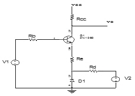
- 전류 보상법
- 온도 보상법
- 전압 보상법
- 궤환 보상법
(정답률: 알수없음)
8. RC결합 저주파 증폭회로의 이득이 높은 주파수에서 감소되는 이유는?
- 부성 저항이 생기기때문
- 증폭기 소자의 특성이 변하기때문
- 결합 캐패시턴스의 영향 때문에
- 출력 회로의 병렬 캐패시턴스 때문에
(정답률: 알수없음)
9. 그림과 같은 연산 증폭기 회로에서 상한 3(dB) 주파수는?
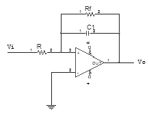
- 1/(2π RC)
- 1/
 π RC
π RC - 1/
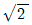
π RsC - 1/(2π R ㆍ C)
(정답률: 알수없음)
10. 변조 신호 주파수가 2(㎑)인 FM파의 점유 주파수 대폭은 얼마인가? (단, 최대 주파수편이는 10(㎑)임)
- 38(㎑)
- 36(㎑)
- 24(㎑)
- 20(㎑)
(정답률: 알수없음)
11. 논리식 ABC+ABC+ABC+ABC을 간단히 하면?
- B(A+C)
- AB+BC+AC
- C(A+B)
- A+B+C
(정답률: 알수없음)
12. 다음 논리회로의 명칭은? (단, E:enable, S:select)
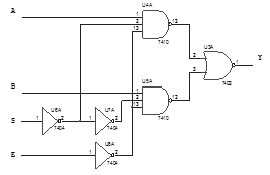
- 2×1 디코더
- 2×1 멀티플랙서
- 4×1 엔코더
- 2×1 디멀티플랙서
(정답률: 알수없음)
13. 다음 Karnaugh-map을 논리식으로 간략화 한 결과식은?
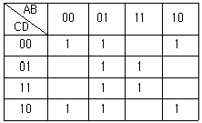
- A B + B C + B D
- A B + B D + B D
- A B + A C + B D
- A B + B D + A C
(정답률: 알수없음)
14. 그림은 슈미트 트리거 회로이다. 이 회로의 설명 중 틀린 것은?
- 두 개의 안정 상태를 갖는 회로이다.
- 펄스 파형을 만드는 회로로는 사용하지 못한다.
- 궤한 효과는 공통 에미터 저항을 통하여도 이루어 진다.
- 입력 전압의 크기가 on, off 상태를 결정하여 준다.
(정답률: 알수없음)
15. 그림과 같은 플립플롭회로를 3개 직렬 접속한 후 입력에 1000(㎐)의 펄스를 가했다면 마지막 단 플립플롭에 나타나는 신호의 주파수는 몇(㎐)인가?
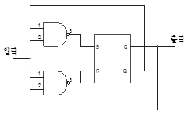
- 125
- 250
- 750
- 4000
(정답률: 알수없음)
16. 다음 중 발진 주파수가 가장 안정적인 발진기는?
- 수정 발진기
- 위인 브리지 발진기
- 이상형 발진기
- 음향 발진기
(정답률: 55%)
17. SRAM과 DRAM에 대한 설명 중 틀린 것은?
- DRAM은 리프레쉬 타임이 있다.
- SRAM은 DRAM에 비해 데이터 저장 용량을 높이는데 용이하다.
- DRAM과 SRAM은 전원을 끊으면 데이터가 소실된다.
- SRAM에는 리프레쉬 타임이 없다.
(정답률: 알수없음)
18. 정류회로에서 맥동율을 나타내는 수식으로 올바른 것은?
- 맥동률=맥동신호의평균전압/출력신호의평균전압×100(%)
- 맥동률=맥동신호의실효전압/출력신호의평균전압×100(%)
- 맥동률=맥동신호의실효전압/출력신호의실효전압×100(%)
- 맥동률=맥동신호의평균전압/출력신호의실효전압×100(%)
(정답률: 알수없음)
19. exclusive-OR와 exclusive-NOR에 해당하는 논리식을 상호 변환한 아래의 식 중에서 틀린 것은? (문제 오류로 보기내용이 정확하지 않습니다. 정확한 내용을 아시는 분께서는 오류신고를 통하여 내용 작성 부탁드립니다. 정답은 1번입니다.)
- (A+B)⋅(A+B)=A⊕B
- (A⋅B)+(A⋅B)=A⊕B
- (A+B)⋅(A+B)=A⊕B
- (A⋅B)+(A⋅B)=A⊕B
(정답률: 알수없음)
20. 어떤 출력 증폭 회로의 입력과 출력파형이다. 이 증폭회로의 설명으로 맞는 것은?
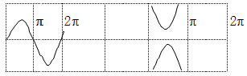
- C급 증폭으로 고주파 대출력에 적합하다.
- B급 증폭으로 중대역 대출력에 적합하다.
- A급 증폭으로 소신호 전압증폭에 적합하다.
- AB급 증폭으로 저주파 전류중폭에 적합하다.
(정답률: 알수없음)
2과목: 정보통신 시스템
21. 동종의 네트워크들을 연결하는데 이용되는 단순 게이트웨이 장치는?
- bridge
- hub
- router
- brouser
(정답률: 알수없음)
22. 통신망의 구성조건중 틀리는 것은?
- 대상 지역 내의 모든 이용자간에 접속이 가능할 것
- 전송할 정보 내용을 제한 할 것
- 번호 체계는 통일적이고 장기간 변경이 없을 것
- 어느 장소에서나 접속품질, 전송품질 및 기타서비스품질이 동일하게유지할 것
(정답률: 알수없음)
23. 통신망의 설계시 어떤 구역안의 탄템극과 그 구역내의 분국과의 전화회선망은 어느 방식으로 하여야 효과적인가?
- 망형망
- 성형망
- 사선망
- 복합망
(정답률: 알수없음)
24. ISDN(종합정보통신망)에서의 채널 종류들중 신호용 채널로 사용하는 것은?
- B channel
- D channel
- H0 channel
- H12 channel
(정답률: 알수없음)
25. 네트워크 구조상의 논리적 모델요소가 아닌 것은?
- 링크
- 노드
- 개체
- 프로세스
(정답률: 알수없음)
26. OSI계층에서 인접한 장치간에 오류검출, 회복, 제어 등을 담당하는 계층은?
- 물리 계층
- 네트워크 계층
- 트렌스포트 계층
- 데이터링크 계층
(정답률: 알수없음)
27. 그림의 프레임 구조와 기술적으로 관련이 없는 것은?
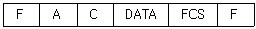
- 비트 stuffing
- 동기형 프로토콜
- HDLC
- 문자지향 프로토콜
(정답률: 알수없음)
28. 다음그림과 같은 시스템에서 패턴 발생기를 이용하여 변조복조기 A,B와 통신선로를 시험하고자 한다. 변복조기 A,B 및 선로까지 한꺼번에 시험하기 위한 변복조기 시험방식은?
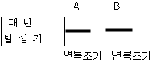
- 로컬 디진탈 루프백(Local Digital)
- 로컬 아날로그 루프백(Local Analog Loop Back)
- 원격 디지털 루프백(Remote Digital Loop Back)
- 원격 아날로그 루프백(Remote Analog Loop Back)
(정답률: 알수없음)
29. 통신시스템에서 송신되는 정보의 보안을 위하여 정보를 분산 시키는 방법중에 해당되지 않는 것은?
- Direct Sequence Spread Spectrum
- Frequency Hopping
- Time Hopping
- Frequency Multiplexing
(정답률: 알수없음)
30. 데이터회선교환방식에 대한 설명중 옳은 것은?
- 통신경로가 물리적으로 통신종료시까지 구성된다.
- 전송대역폭 사용이 매우 융통적이다.
- 일반적으로 전송속도 및 코드변환이 가능하다.
- 소량의 간혈적인 통신에 매우 효율적이다.
(정답률: 10%)
31. 다음 조건과 전송되는 통신시스템의 전체 효율은?
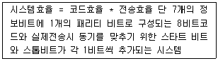
- 87.5%
- 80%
- 75%
- 70%
(정답률: 알수없음)
32. 가상회선(Virtual Circuit)패킷교환방식과 데이터그램(Data gram)패킷 교환방식의 공통점이 아닌 것은?
- 패킷들은 전달될 때까지 저장되기도 한다.
- 각 패킷에 대하여 경로를 선택해야 한다.
- 전용선로는 없다.
- 대역폭 사용이 융통적이다.
(정답률: 알수없음)
33. 데이터 교환방식 중 망의 과부하로 인하여 전송지연시간이 길어지고 포화상태에 이르면 전송이 불가능한 것은?
- 메세지교환
- 음성을 위한 교환회선
- 패킷교환
- 데이터를 위한 교환회선
(정답률: 알수없음)
34. 광전송시스템의 장점과 관계가 없는 것은?
- 넓은 대역폭의 장점이 가능하다.
- 손실(loss)이 적다.
- 전송로를 통한 전원공급이 쉽다.
- 노이즈(noise)에 영향을 적게 받는다.
(정답률: 알수없음)
35. ITU-T 권고안 중 패킷교환용 공중 데이터 네트워크의 상호접속을 위한 노드사이의 표준프로토콕(Protocol)은?
- X.3
- X.25
- X.28
- X.75
(정답률: 알수없음)
36. 평균고장 간격이 99시간 평균 수리시간이 2시간인 전산시스템이 있을 경우 이 시스템의 가동율은?
- 0.90
- 0.95
- 0.98
- 100
(정답률: 알수없음)
37. T3디지탈 전송망의 접속 신호형태는?
- NRZ BIPOLAR
- RZ BIPOLAR
- B6ZS
- B3ZS
(정답률: 10%)
38. ISDN망 종단장치 NT2에 대한 설명으로 옳지 않은 것은?
- 하나의 TE1, 또는 TE2와 TA의 결합체가 NT2 없이 NT1에 연결될 수 있다.
- 최대 4개의 가입자 접속장치가 버스형태로 연결되어 NT2없이 NT1에 연결될 수 있다.
- 사설교환기도 NT2가 될 수 있다.
- NT2에서 버스구조도 접속될 수 있다.
(정답률: 알수없음)
39. LAN상에서 각노드들간에 데이터를 주고받기 위한 사전준비가 완결되어 있어서 데이터 충돌이 없는 액세스 방식에 해당하지 않는 것은?
- CSMA/CD
- Polling
- Token Passing
- Slotted Ring
(정답률: 알수없음)
40. HDLC의 전송제어에서 프래그 패턴은 어떤 비트 구성을 사용하는가?
- 임의구성
- 01111110
- 10000001
- 10101010
(정답률: 알수없음)
3과목: 정보통신 기기
41. 무선송신기의 AGC회로의 이득은 다음 중 어느것에 의해 제어되는가?
- Mixer
- IF Amplifier
- Detector
- Audio Amplifier
(정답률: 알수없음)
42. 위성통신이나 무선통신 등에서 여러가입자가 동시에 할당된 주파수 대에서 통신이 가능하도록 하는 다원접속방식이 아닌 것은?
- 주파수 분할 접속
- 멀티 분할 접속
- 시 분할 접속
- 코드 분할 접속
(정답률: 알수없음)
43. 다음중 무선송수신기에 사용되는 주파수합성기(synthesi-zer)의 기본적인 회로는?
- 혼합기
- 주파수분배기
- PLL
- 평형변조기
(정답률: 알수없음)
44. 모뎀의 송신부 중 데이터 패턴을 랜덤하게 하여 수신측에서 동기를 잃지 않도록 하며, 신호의 스펙트럼이 채널의대역폭 내에 가능한 넓게 분포하도록 하여 수신 측에서 동화기가 최적의 상태를 유지하도록 하는 기능을 하는 것은?
- 변조기
- 데이터 부호화기
- 스크램블러
- 증폭기
(정답률: 알수없음)
45. 동기식 전달 모드(STM)의 특징이 아닌 것은?
- 다양한 속도 제공은 제한되어 있다.
- 통합의 정도는 모든 망이 통합되어 있다.
- 정보전송의 지연은 일정하다.
- 분배서비스의 정합도는 일정하다.
(정답률: 알수없음)
46. 압신기와 신장기의 설치 설명중 옳은 것은?
- 모두 송단측에 설치한다.
- 모두 수단측에 설치한다.
- 압신기는 송단측에 신장기는 수단측에 설치한다.
- 압신기는 수단측에 신장기는 송단측에 설치한다.
(정답률: 알수없음)
47. 음향 결합기(Acoustic Coupler)에서 주로 사용되는 변조방법은?
- PSK
- ASK
- FSK
- DPSK
(정답률: 알수없음)
48. 중앙처리장치의 입출력채널에 대한 설명으로서 옳지 않은 것은?
- 주변장치를 제어하며, 기억장치와의 데이터 전송을 수행한다.
- 전송방식은 버스트모드와 다중모드가 있다.
- 셀렉터 채널은 다중모드 전송방식을 사용한다.
- 블럭 멀티플렉서 채널은 블록단위로 다중동작이 이루어진다.
(정답률: 알수없음)
49. 채널의 시간슬롯이 고정되므로서 발생하는 낭비를 보완 하기 위한 방식은?
- 통계적 시분할 다중화
- 주파수분할 다중화
- 코드분할 다중화
- 광파장분할 다중화
(정답률: 알수없음)
50. 다음 중 비디오 텍스의 설명으로 틀린 것은?
- 쌍방향 통신을 한다.
- 축적정보량이 비교적 많다.
- TV수신기와 인터페이스가 필요하다.
- 수신자수와 관계없이 동시접속이 가능하다.
(정답률: 알수없음)
51. 정보 단말기의 기능 중 전송 제어 기능이 아닌 것은?
- 신호 변환 제어 기능
- 오류 제어 기능
- 입.출력 제어 기능
- 송.수신 제어 기능
(정답률: 알수없음)
52. 정지위성과 지구국 사이의 전파지연 시간은 약 얼마인가?
- 0.10-0.20초
- 0.20-0.35초
- 0.35-0.50초
- 0.50-0.65초
(정답률: 알수없음)
53. 비디오텍스의 방식 중 카메라나 팩스로 화면정보를 자동으로 입력할 수 있는 방식은?
- CAPTAIN
- CEPT
- NAPLPS
- PRESTEL
(정답률: 알수없음)
54. G3 Fax의 설명 중 틀린 것은?
- 디지털 전송방식을 이용한다.
- 수직방향의 표준 해상도는 3.85[선/mm]이다.
- A4용지를 1분대 전송한다.
- 고능률 부호화방식(MMR)을 적용한다.
(정답률: 알수없음)
55. 그래픽 단말기의 화면 출력을 사용하는 방법중 모든픽섹에 액세스 가능한 네온 전구의 배열을 사용한 화면표시장치의 일종인 방식은 무엇인가?
- 스토리지 튜브
- 레스터 리프레쉬
- 랜덤스캔방식
- 플라즈마방식
(정답률: 알수없음)
56. 다음 중 HDTV의 설명이 옳은 것은?
- 주사선 수는525이다.
- 화면의 종횡비는 3:4이다.
- 비월주사방식을 사용한다.
- 변조방식은 영상신호 AM-VSB, 은성신호는 FM이다.
(정답률: 알수없음)
57. ISDN 가입자는 여러개의 단말기로 동시에 통화를 할수있다. 다음 중 ISDN 채널 다중화에 응용되면서 원거리 통신에 적합한 기술은?
- 시분할 다중화 기술
- 주파수 다중화 기술
- 통계적 다중화 기술
- 비동기식 다중화 기술
(정답률: 알수없음)
58. 다음은 포트 공동이용기 설명이다. 올바른 것은?
- 호스트 컴퓨터와 모뎀사이에 설치되어 컴퓨터 포트의수와 비용을 절감시킨다.
- 호스트 컴퓨터와 단말기 사이에 사용하며 포트의 증가 없이도 이용율을 높인다.
- 호스트 컴퓨터와 단말기 사이에 인터페이스를 제공한다.
- 포트공동 이용기는 버스형 네트워크에 사용된다.
(정답률: 28%)
59. 다음 중 디지털 서비스 유니트(DSU)의 설명중 틀린 것은?
- 단극성 신호를 변형된 양극성 신호로 바꾸어 주며 수신측에는 반대로 행한다.
- 선로에 한쪽극성의 전압이 실리는 것을 방지한다.
- 모뎀보다 비용이 많이 비싸다.
- 정확한 동기 유지를 위한 클럭 추출회로가 있다.
(정답률: 알수없음)
60. 교환기의 공통제어 방식의 특징으로서 가장 큰 단점은?
- 축적변환기능
- 저손실 중계
- 번호계획과 교환회로망 구성의 독립성
- 장애발생시 영향이 큼
(정답률: 알수없음)
4과목: 정보전송 공학
61. 다음은 레일리 산란 손실에 대한 설명이다. 틀린 것은?
- 광섬유 제조시 열 동요 현상에 의한 광신호의 산란으로 생기는 불가피한 손실이다.
- 광섬유 코어내의 천이 금속, OH-와 같은 불손물에 의하여 광섬유 내에 열로 유실되어 발생하는 손실이다.
- 이론적으로 빛의 파장의 역수(入-4)에 비례하고 모드와 코어의 직경에는 무관핟.
- 현재 광섬유 전송 손실의 큰 부분을 차지하고 있으며 제조 기술의 발전으로 감소시킬 수 있다.
(정답률: 알수없음)
62. 디지털 신호의 펄스열을 그대로 또는 다른 형식의 디지털 펄스파형으로 변환시켜 전송하는 방식은?
- 베이스밴드 전송방식
- 반송대역 전송방식
- 광대역 전송방식
- 협대역 전송방식
(정답률: 알수없음)
63. 아날로그 신호X(t)를 매 1초마다 샘플링한후 델타변조하여 전송하려고한다.｜X(t)｜≤ 8일 때 샘플된 신호당 전송되는 비트의 수는?
- 1
- 2
- 3
- 4
(정답률: 알수없음)
64. (7,4) 해밍코드의 코드율은 얼마인가?
- 7/4
- 7/3
- 4/7
- 3/7
(정답률: 알수없음)
65. QPSK처럼 두 개의 비트가 한 개의 신호 단위로 이루어 질 경우 신호의 전송속도가 9,600[bps]일 때 보오속도(baunrate)는 얼마인가?
- 19,200
- 14,400
- 9,600
- 4,800
(정답률: 알수없음)
66. 다음 자동반복요청(Automatic Repeat Request :ARQ ) 기술중 가장 효율적인 방법은?
- simple ARQ
- stop and wait ARQ
- go back N continuous ARQ
- selective-repeat continuous ARQ
(정답률: 알수없음)
67. 다음의 변조기법에서 원천코딩(source coding)과 관계가 없는 것은?
- 차동 PCM
- 적응 PCM
- 비선형 코딩
- 선형 예측코ELD
(정답률: 알수없음)
68. 전송속도 (bit rate)에 대한 표현으로 맞는 것은?
- 전송속도 = {(부호화 비트수 * 채널 수) + 동기 부호수 } * 표본화 주파수
- 전송속도 = {(표본화 비트수 * 채널 수) + 동기 부호수 } * 표본화 주파수
- 전송속도 = {(부호화 비트수 * 채널 수) + 동기 부호수 } * 부호화 주파수
- 전송속도 = {(부호화 비트수 * 프레임 수) + 동기 부호수 } * 표본화 주파수
(정답률: 알수없음)
69. 다음 중 전송로에 디지털 신호를 전송하는 펄스변조 방식은?
- 펄스 진폭변조
- 펄스 주파수 변조
- 펄스 위치변조
- 펄스 부호변조
(정답률: 알수없음)
70. BCH코드에 대한 다음 설병중 틀린 것은?
- BCH코드의 대표적인 코드가 Reed-Solomon이다.
- 구조가 간단하면서도 복수개의 에러를 정정할 수있다.
- 콘볼류션 코드의 일종으로 에러 전정에 사용된다.
- t개의 에러 정정을 위한 부호어 사이의 최소거리는 (2t + 1)보다 커야한다.
(정답률: 알수없음)
71. 다음은 여러 가지 동축케이블의 종류들이다. 가장 광대역 특성을 가지는 동축케이블은?
- P-1M
- P-4M
- C-60M
- C-120M
(정답률: 알수없음)
72. 송신측과 수신측의 동기를 취하는 방법의 예가 아닌 것은?
- 동기 패턴에 의한 캐릭터 동기식
- 텍스트의 구별 혹은 프레임의 식별을 행하는 플래그 동기식
- 조보식
- 수신인지 송신인지를 미리 정하는 예약 동기식
(정답률: 알수없음)
73. 다음중 방송망의 매체 엑세스 제어중 비동기식 제어기술이 아닌 것은?
- 예약방식
- 라운드 로빈
- 주파수 분할 방식
- 경쟁방식
(정답률: 알수없음)
74. 주파수 분할 다중 통신에서 주군(master group)의 주파수 대역으로 맞는 것은?
- 60 -108[kHz]
- 312-552[kHz]
- 812-2044[kHz]
- 8516-12388[kHz]
(정답률: 알수없음)
75. 전송로의 특성 중 시스템적인 왜곡(systematic distortion)에 해당되는 것은?
- 페이딩
- 에코(echo)
- 백색잡음
- 지연왜곡
(정답률: 알수없음)
76. 베이스 밴드 신호중 샘플링이 필요치 않은 형태는?
- Return to Zero Space
- Return to Zero
- Return to Bias
- Nonreturn to Zero
(정답률: 알수없음)
77. 8개의 위상과 2개의 진폭을 혼합하여 어느 신호를 변조하려 할 때 적장한 방법은?
- FSK(Frequency shift keying)
- FSK + AM
- DPSK(Differential Phase Shift Keying) + AM
- DPSK
(정답률: 알수없음)
78. 주파수 분할 다중화 방식의 설명으로 잘못된 것은?
- 다수의 음성 신호를 모아 하나의 신호파로 취급하여 각각의 반송파를 사용해서 변조하고 서도 신호가 중복되지 않도록 하나의 전송로로 복수의 이용자에게 신호를 동시에 전송하는 방식
- 주파수를 프레임이라는 간격으로 쪼개고 각 프레임을 사용자 시간 슬롯으로 할당할 수 있다.
- 다중도를 높이기 위해서 단계적인 다중화 기구가 정해져 있는데 이를 아날로그 계층이라 한다.
- 슈퍼그룹인 60채널, 5r5o를 다중화한 그룹을 주군(master group)혹은 기초주군이라 한다.
(정답률: 알수없음)
79. 채널의 대역폭이 1000[Hz]이고 채널에서의 출력의 신호대 잡음비가 31일 때 대역통과 채널의 통신 용량을 tishs의 정리에 의해서 계산하면?
- 4000 bit/s
- 5000 bit/s
- 6000 bit/s
- 30000 bit/s
(정답률: 알수없음)
80. 광섬유의 광손실중 외부의 힘에 의한 손실은?
- 매크로 밴딩 (macro banding) 손실
- 마이크로 밴딩(micro banding) 손실
- 나노 밴딩(nano banding) 손실
- 피코 밴딩(pico banding) 손실
(정답률: 알수없음)
5과목: 전자계산기일반 및 정보통신설비기준
81. 마이크로 프로세스의 전송명령 없이 데이터를 입출력장치에서 메모리로 전송할 수 있는 것은?
- DMA
- Interrupt
- FIFO
- SCAN
(정답률: 알수없음)
82. 입출력 과정에서 CPU의 역할이 가장 큰 방식은?
- Programmed I/O
- Interrupt - Driver I/O
- DMA
- Channel I/O
(정답률: 알수없음)
83. 기억장치의 계층에서 가장 속도가 빠른 것은?
- 주기억 장치
- 보조기억장치
- 캐쉬(cache) 기억장치
- 코아기억장치
(정답률: 알수없음)
84. 다음 중 문자의 표시와 관계 적은 코드는?
- BCD 코드
- EBCEIC 코드
- 그레이(Gray) 코드
- ASCII 코드
(정답률: 알수없음)
85. 수치 자료 표현 방법에서 부동 소수점 표현(Floating Point Representation)을 가장 적절하게 설명한 것은?
- 부동 소수점 표현 방법에는 부호부, 가수부로 구분할 수 있다.
- 정밀도가 요구되는 과학 및 공학 또는 수학적인 응용에 주로 사용된다.
- 수를 표현하는 자리수는 고정 소수점에 비하여 적게 든다.
- 수 표현 방법이 고정 소수점에 비하여 간단하다.
(정답률: 알수없음)
86. 기간 통신 사업자가 경영하는 사업의 전부 또는 일부를 휴지 또는 폐지하고자 하는 경우 어떤 절차를 거쳐야 하는가?
- 정보통신부 장관의 승인을 얻어야 한다.
- 정보통신정책 심의 위원회의 심의를 거쳐야 한다.
- 통신 위원회의 인가를 받아야 한다.
- 한국통신공사의 허가를 받아야 한다.
(정답률: 알수없음)
87. 전기통신의 표준화에 관한 업무를 효율적으로 추진하기 위하여 설립한 법인은?
- 통신 위원회
- 한국 정보통신 기술협회
- 형식 승인 심의회
- 한국통신 품질 보증단
(정답률: 알수없음)
88. 정보통신부 장관은 불온통신에 대하여 누구로 하여금 그 취급을 거부 정지 또는 제한하도록 명할 수 있는가?
- 관할 체신청장
- 관할 경찰서장
- 전기통신사업자
- 국정원장
(정답률: 39%)
89. 자가 전기통신설비를 설치하고자 하는 자는 어떤 절차를 거쳐야 하는가?
- 정보통신부장관의 허가를 받아야 한다.
- 정보통신부장관에게 신고만 하면 된다.
- 정보통신부 장관의 승인을 받아야 한다.
- 정보통신부 장관의 등록만 하면된다.
(정답률: 알수없음)
90. 통신회선의 평형도의 단위는?
- [dB]
- [%]
- [dBm]
- [°]
(정답률: 알수없음)
91. 다음 중 전기통신 사업법에서 정하는 보편적 역무의 내용이 아닌 것은?
- 유선전화서비스
- 긴급통신용 전화서비스
- 장애인. 저소득층 등에 대한 요금감면 전화서비스
- 자가 전기 통신서비스
(정답률: 알수없음)
92. 순서도(flowchart)의 기본 형태가 아닌 것은?
- 직선형 순서도
- 분기형 순서도
- 세분화형 순서도
- 반복형 순서도
(정답률: 40%)
93. 정보통신기술자의 공사 현장 배치에 관한 설명 중 잘못된 것은?
- 공사의 시공관리를 하기 위함이다.
- 보수교육 이수자라야 한다.
- 공사 발주자의 승낙없이 공사 현장을 이탈할 수 없다.
- 배치기준은 공사의 종류(도급액)에 상응하여야 한다.
(정답률: 알수없음)
94. 마이크로프로세서에서 인터럽트 발생기에 돌아올 주소를 어디에 저장하고 인터럽트 터리 루틴으로 가는가?
- ALU
- STACK POINTER
- PROGRAM COUNTER
- STATUS REGISTER
(정답률: 알수없음)
95. 다음과 같은 32비트의 2의 보수(2's complement)형식의 고정 소수점의 수(fixed point number)가 표현할 수 있는 최대값은?
- 231-1
- 231+1
- 232
- 231
(정답률: 알수없음)
96. 전기통신 설비의 기술기중에 관한 규칙에서 정의한 고주파수란?
- 3000[Hz] 미만의 주파수
- 300[Hz] 이상 3400[Hz] 이하의 주파수
- 3400[Hz]를 초과하는 주파수
- 3[GHz]이상 30[GHz] 미만의 주파수
(정답률: 알수없음)
97. 기간통신 사압자로부터 전기통신회선 설비를 임차하여 전기 통신역무를 제공하는 사업을 무엇이라 하는가?
- 임차통신사업
- 부가통신사업
- 특정통신사업
- 대여통신사업
(정답률: 알수없음)
98. 파이프라인에 의한 이론적 최대 속도 증가율을 내지 못하는 주된 이유가 아닌 것은?
- 병목현상
- 자원회피
- 데이터 의존성
- 분기 곤란
(정답률: 9%)
99. 2진수 1100101을 8진수로 변환하면 다음 중 어느 것에 해당하는가?
- (102)8
- (107)8
- (141)8
- (145)8
(정답률: 75%)
100. 다음은 어떤 용어의 정의에 해당되는가?
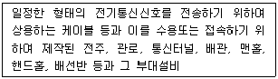
- 국선접속설비
- 지하관로설비
- 통신망 단자
- 설로설비
(정답률: 알수없음)